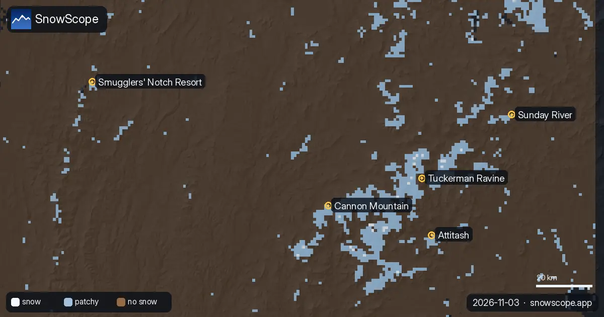
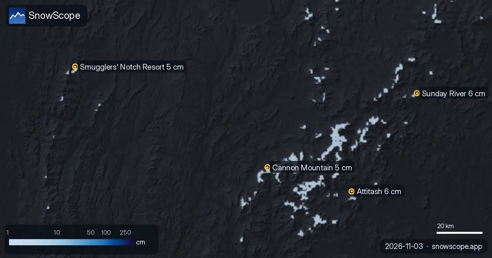

Partes de nieve
Partes de nieve diarios para esquiadores: dónde está la nieve, qué llega y dónde esquiar, a partir del mapa de nieve de SnowScope y de las estaciones de medida. Cada cifra sale de los datos del día.

Kope recibió 21 cm de nieve nueva en las últimas 72 horas. Ahora tiene unos 11 cm en las pistas altas, según nuestro modelo de nieve.

Donde más nieve hay en los Alpes es en Bonneval-sur-Arc: unos 55 cm en las pistas altas, según nuestro modelo de nieve. Después vienen Schnalstal …

Hasta el 6 de noviembre, nuestra previsión da 37 cm en Chabanon, 34 cm en Dévoluy y 33 cm en Chaillol. Las cifras de las estaciones de esquí son …

Oukaimden recibió 14 cm de nieve nueva en las últimas 72 horas, 5 cm de ellos en las últimas 24 horas. Ahora tiene unos 3 cm en las pistas altas, …

Rasos de Peguera recibió 17 cm de nieve nueva en las últimas 72 horas, 17 cm de ellos en las últimas 24 horas. Ahora tiene unos 13 cm en las pistas …

Nuestra capa de satélite guarda la última vista despejada de cada lugar, hasta el 3 de noviembre. Esto es lo que muestra en las estaciones con más …

Silverton Mountain recibió 66 cm de nieve nueva en las últimas 72 horas. Ahora tiene unos 131 cm en las pistas altas, según nuestro modelo de nieve.

Donde más nieve hay en el oeste de EE. UU. es en Kendall Mountain: unos 134 cm en las pistas altas, según nuestro modelo de nieve. Después vienen …

Combinamos el espesor de nieve de hoy, la nieve nueva de las últimas 72 horas y la previsión para elegir Silverton Mountain, Telluride y Lee's Ski …

Donde más nieve hay en el oeste de Canadá es en Big White: unos 91 cm en las pistas altas, según nuestro modelo de nieve. Después vienen Silver Star …

Hasta el 6 de noviembre, nuestra previsión da 33 cm en Ski Callaghan, 31 cm en Mount Cain Alpine Park y 25 cm en Whistler Blackcomb. Las cifras de …

Comparamos la nieve de hoy en 4 estaciones en el noreste de EE. UU. con la misma fecha de cada uno de los 46 inviernos pasados. 1 están claramente …

La nieve el 3 de noviembre de 2026: Kendall Mountain 134 cm tras una tormenta, Big White 91 cm, los Alpes hasta 55 cm en Bonneval-sur-Arc. Modelo y estaciones.